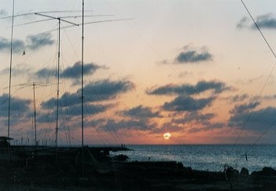
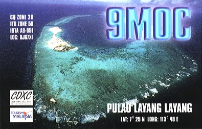
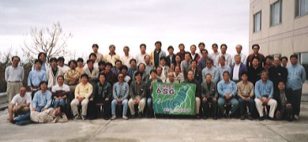
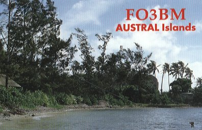
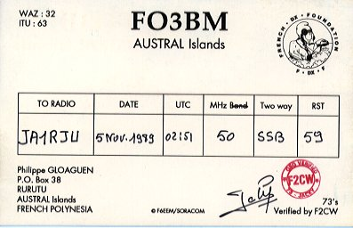
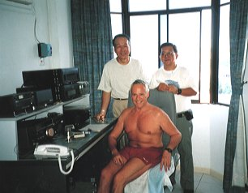

9M0C Spratly Is
このリポートは 1エリアの入感状況です
全国版「50MHz DX Web Cluster」も参考にして下さい
TIME:UTC(JST-9:00)
50MHz DX Web Clusterへ

【Back Issues Apr.98】
30.Apr.98
(10:00z) VK4FNQ 07:20 50.130 SSB VK8RAS/B 07:57 50.047 CW Beacon(PG66) N7ET/DU7 09:06 50.110/102 CW ◎ 午前中は沖縄が"完全なEs"で強力に入感。 JR6(沖縄)ではJA6(九州)からJA1(関東)までの広い範囲が聞こえ ていたようだが、1エリアからは南西の1.000Km以下はまだ聞こえない。 VK8RASのビーコンは08:30z頃まで良く聞こえていたが、いつものように他のVK8のQRVはなかった。 昨夜(4月29日)は沖縄で再びオマーンのA45ZNがリポートされている(11:30z前後)。 この方向に対するコンデションは沖縄-本土間ではあまりにも差が有りすぎる。 沖縄では最近6mにもQRVを始め た8Q7QQ(Maldives)とスケジュールを組んでいるとのことだが、沖縄からならこのコンデションでも難しいQSO ではない。29.Apr.98
(10:00z) VR2ZST 03:30 50.110/150 SSB VR2YGQ 03:31 50.115/120 SSB DS1BJU 04:47 50.150 SSB VK3DQJ 06:05 50.125 SSB VK3AMK 06:12 50.133 SSB VK3AMZ 06:13 50.100 CW VK3XQ 06:17 50.139 SSB VK3AMK 06:25 50.095 RTTY VI50G 06:28 50.095 RTTY (VK3) VK3ATL 06:30 50.095 RTTY VK2DN 07:14 50.110 CW VK2QF 08:10 50.110 CW N7ET/DU7 09:37 50.110/102 CW ◎ 昨日同様、午前中から西方向からの49.750MHz、48MHz帯のTVが強力に入感。 HL、VR2が良く聞こえていたが、 それ以上に強力だったのは「ALL JAコンテスト」に参加しているCW局のスプリアス！。 CWバンドに隣接してい るDXバンドとはいえ、コンテスト期間中の50.110MHz付近は"無数"のCWのスプリアスで埋もれてしまう。 受信側に原因がある事も考えられるのでRigを取り替えてみても変わらずに聞こえているので、これは完全にス プリアス。 コンテストで信号レベルを"上げる"のはいいとしても、スプリアスをまき散らされたのではたまら ない。 Esが終了してからVKが聞こえてきたが、信号レベルはさほど上がらない。28.Apr.98
(12:00z) VR98LC 03:22 50.130 SSB VR2ZST 04:06 50.110 SSB VR2ZLP 04:07 50.110 SSB VR2YGQ 04:08 50.110 SSB VR2ZGD 04:09 50.120 SSB VK2DN 07:29 50.110/104 CW VK2ZCV 07:35 50.110/160 SSB VK4RGG/B 07:47 50.058 CW Beacon VK2PH 07:52 50.105/100 CW VK2BHO 07:59 50.106 CW VK3AMK 08:05 50.129 SSB VK3DQJ 08:06 50.145 SSB VK3ALM 08:12 50.160 SSB KH2JU 09:23 50.125 SSB QSY to SSTV(50.300MHz)! N7ET/DU7 09:34 50.110/103 CW VK4FNQ 10:19 50.110 SSB ◎ 昼前から49.750MHzと48MHz帯(48.240/250/260MHz)のTVが強力。 このTVのバズの中からVR2'sが入感していた が、信号は強いものではなかった。このVR2と同時に1エリアからはJA8の北部(根室、網走)がEsで強力に入感し ていた。 VR2はJA8ともQSOしていたが、Esのマルチホップの伝搬なので信号は強くなかったもよう。 国内のEsも一段落した07:00z頃からVKが入感してきた。 今日のVKへのパスは、7.000Kmから8.000Km前後の比 較的"足の長い"もので、VK4の南部(VK4RGG/B)からVK2(シドニー)、VK3(メルボルン)近辺までのオープンだった。 JA側のEs層による影響か、VKの信号はいま一つ上昇してこなかった。 VKのオープン時に強力に入感するVK4-TV(46.172MHz)よりも、シドニー(VK2)近郊のVK2-TV(46.240MHz)が遅く まで聞こえていた。 久しぶりに09:20zからグアムのKH2JUが入感、JAのパイルとなったが5分ほどで50.300MHzの SSTVにQSYしてしまった。27.Apr.98
(10:00z) VR2LC 03:05 50.110 SSB VR2ZST 03:06 50.110 SSB VR98LC 03:09 50.125 SSB (VR2LC) VK6IP 05:50 50.110 CW VK6ACY 06:17 50.110/125 SSB V73AT 08:00 50.110 SSB/CW ◎ 午前中から49.750MHz、48MHz帯(48.240/250/260MHz)のTVが強力で、いよいよ近場のコンデションが本格的 になってきた。西方向のアンテナビームでは49.750MHzの影響で、50MHzのバンド中が強力なバズに埋め尽くさ れる。 夕方の沖縄もダイレクトで強力に入感している。 ◎ 去る2月12日から24日にかけて行われた9M0C(Spratly Island)のQSLの発行が開始された。 QSLマネジャー のG3SWHに手渡された30.000枚の"9M0C"のQSLの総重量は280Kg！。 QSLのデザインは2枚折り、4面のFBなもの。


 |
25-26.Apr.98
(00:00z) ◎ 東北6SGmeeting(秋田県・横手市簡易保険保養センター)24.Apr.98
(11:00z) V73AT 06:33 50.110 SSB VK3DQJ 07:38 50.120 SSB VK4FNQ/4 10:32 50.130 SSB QTH GL=QG29CD ◎ 午前中から昼過ぎまでのDXコンデションは鳴りをひそめてしまった。夕方近くなってから短時間のV73ATの入感の後、 イブニングタイプのVKまでの入感状況は相変わらずだが、それより近場のBV、HLが聞こえてくるようになったので、6m もいよいよEsシーズンが近づいているのが予感される。 Es層が活発になってくるに従って、F2層で反射してくる遠距離からのDXのシグナルは、低層のEs層にブロックされる 状態となって届かなくなる。 ◎ クラスターにPY5CCとSP's(ポーランド)のQSOがリポートされている。南米ブラジルからヨーロッパのパスはそれほど 珍しいことではないが、この時期の東欧諸国とのオープンは珍しい(？)。 距離的にはJA1－5R8！を超える。 ◎ お知らせ ◎ 4月25、26日の両日、秋田県横手市において「第27回東北6SGミーティング」(VSGの東北版！)が開催される。 今回は1、0エリアからの参加者を含め約60人が集まる予定。このミーティングに参加のため両日はこのコーナーのリポー トはお休みとなります。 東京－秋田間の道中、6mのワッチだけはしています。23.Apr.98
(12:00z) 9M6CT 07:20 50.110 SSB VK4BLK 09:26 50.110 SSB VK2FZ/4 09:42 50.110 SSB VK4DO 10:14 50.110 CW22.Apr.98
(11:00z) N7ET/DU7 07:00 50.104 CW V73AT 07:49 50.110 SSB HL2DJW 07:57 50.110 CW ANT SE(150) BV2PU 09:50 50.100 CW VK4FNQ 10:51 50.150 SSB VK8VF/B 10:52 50.056 CW ◎ V73ATの入感から日没前の南東のスキャッター、その後のN7ET/DU7、イブニングタイプTEのVKへと同じパターンでDX の入感エリアが移動している。 急上昇していた太陽活動(ソラーフラックス、サンスポット)も一段落したが、午前中 のパスは落ち込んで？しまった。 まだ本格的な国内Esのシーズンには早いが、間もなく2,000Km程度のパスが始まる。21.Apr.98
(10:00z) VK4BLK 06:50 50.110/130 SSB VK4ABW 07:03 50.110/150 SSB V73AT 07:54 50.130 SSB VK4DO 09:10 50.110 SSB BV2PU 09:14 50.100 CW VK8VF/B 09:15 50.056 CW ◎ 03:00z頃から46.172MHzのVK-TVは聞こえていたが、VK4が入感してきたのは06:50z。 VK4BLKは07:26zに50.110MHz で彼のCQに応答してきたN9KX/KH4(Midway Is)とQSOしていたが、JAには信号の"かけら"も聞こえなかった。 イブニングタイプのTEによるVK4/VK8が良く聞こえるようになった。 VK8VFのビーコンは強く入感しているが、QRVし て来る局は少ない。 ◎ VQ9(Chagos Is)からVQ9KKの他に、VQ9AIも6mに興味を持っているとのことなので、この局の運用も期待される。20.Apr.98
(12:00z) BV2PU 07:50 50.120 SSB BV2YH 08:09 50.120 SSB N7ET/DU7 10:41 50.110 CW VK8VF/B 11:00 50.056 CW VK8PV 11:50 50.110 SSB ◎ 先日のV73、V63と同時に聞こえていたBV2PUは南東のスキャッターだったが、今日の"BV2"はダイレクト。 4月も後 半に入りいよいよ6mは"Es伝搬"の気配が出てきた。19.Apr.98
(09:00z) V73AT 07:50 50.110/130 SSB V63AO 08:00 50.120 SSB N7ET/DU7 08:09 50.110/102 CW ◎ 今日はZL/VKの入感はなかったが、夕方からの4,000Km前後のパスは健在。 ただし南東方向は2、30分ほどの短い 時間でフェードアウトしてしまう。18.Apr.98
(10:00z) ZL2KT 04:55 50.130/150 SSB ZL3NE 05:02 50.110/105 CW ZL2TPY 05:10 50.110/117 SSB 05:10-08:00z- V73AT 05:19 50.160 SSB ZL2AGI 05:37 50.140/125 SSB V63AO 06:30 50.120 SSB N7ET/DU7 08:10 50.102 CW HL1LTC 08:55 50.120 SSB ◎ 03:30zから急上昇した45MHz帯のZL-TVに続いてZL2/3の強力な入感があった。 エリアによって入感のピークに 差があったようだが、1エリアでは05:00z頃から05:45zにかけて59+のFBなオープンだった。 一時コンデションが 落ちたが再び上昇、V63AOが出てきた06:30z以降もFBに入感、最後まで聞こえていたZL2TPYは08:00z過ぎまでJAの パイルを受けていた。 50.740MHzのZL-TVの音声も強力に入感していたが、51MHz帯ではZLの局は確認出来なかった。17.Apr.98
(10:00z) N7ET/DU7 08:20 50.110/103 CW ◎ VK/ZLのTVの入感もなく、今日の南太平洋方面のコンデションは落ち込んだ。 午後からの48MHz帯の南西方向 からのTVは強力で、DX入感はN7ET/DU7から始まった。 ここのところコンデションが一時的に上昇しているが、サイクル23がスタートしたとはいえ、ボトムから立ち 上がってまだ間もない訳で、本格的なコンデションにはほど遠い。このコンデションではまだ北緯30度以北での 横パスは難しい。 N9KX/KH4のDX-Peditionが行われているが、KH6/7(Hawaii)の"まともな"オープンもない今の 状態では苦しい。 KH6VP(Ron)からの情報では4、5日前にVK8VFのビーコンが入感(02:40z頃)していた時にVKの方 向から弱い"JA8"の信号を確認したとのことだが、QSO出来る強さではなかったと。16.Apr.98
(13:00z) VK5BC 05:42 50.110 CW VK3SIX 05:47 50.110 CW VK4BRG/B 05:59 50.077 CW V73AT 06:45 50.110 SSB V63AO 07:38 50.120 SSB 9M6CT 07:56 50.110 SSB BV2PU 08:36 50.110 SSB ANT Beam SE(150) VK4DO 09:20 50.110 SSB N7ET/DU7 09:38 50.110/103 CW VK4FNQ 09:41 50.110/160 SSB V73AT 09:42 50.110 SSB VK8VF 11:57 50.056 CW Beacon ◎ 夕方から南東方向のスキャッターが強力だが、その陰でDXが出ている事も有るので要注意。今日も50.120MHz でCQを出しているV63AOを国内QSOで潰してしまっていた。 最近はVKの局も50.200MHz付近まで"QSYの周波数"を 指定してくる事があるが、DXがオープンしている時にはここまでとは言わないまでも、少なくとも50.150MHz以 下での国内QSOは控えてもらいたいもの。 VKの局は、50.110MHzで"短いCQ"を出して応答されると直ぐに周波数 を指定してQSYしている。 この国際的な「呼び出し周波数(International DX Calling Frequency)」50.110MHz をクリアーな状態にすることに心がけているのが分かる。 一方、JA局といえば、50.110MHzをV.UHFの「FMのメインチャンネル」と勘違いしているのではないかと思われる 局が少なくない。 ワッチもそこそこに頻繁に長いCQを連呼されたのでは、珍局を待ってワッチしている局はた まらない。 また、CQを出して受信する周波数を指定するところまではいいのだが、これを連呼されると二つの 周波数を独占しているのとなんら変わりはない。 これからはコンデションも上がってきて、どんな珍局が飛び込んでくるかもしれないのだから、バンドのオープ ンが確認されたら、「50.110MHz」での"無用なCQ"は控えて、出来るだけワッチに専念してもらいたい。 参考までに米国(国際的にも一般化)を中心に推奨している6mのDX Windowsを下記に示す。 50.080-50.100MHz CW International DX Window. 50.090MHz CW International DX Calling Frequency. 50.095MHz CW Continental U.S.Calling Frequency. 50.100-50.125MHz USB International DX Window. 50.110MHz USB International DX Calling Frequency. 50.125MHz USB Continental U.S. Calling Frequency15.Apr.98
(12:00z) VK4BLK 03:50 50.150 SSB VK4TL 03:53 50.110 SSB VK8RAS 04:15 50.047 CW Beacon VK4KK 04:49 50.110 SSB FK1TK 05:47 50.110/120 SSB V63AO 07:50 50.120 SSB N7ET/DU7 09:11 50.110/105 CW VK4ABW 09:46 50.110 SSB VK8VF 12:06 50.056 CW Beacon ◎ 久々のニューカントリーと"鳴り物入り"で行われたH40(Temotu Is)のDX-Peditionだったが、結局H40AA/H40AB の両局ともに6mでは空振りだった。 すでに相次いでQRTしてしまったが、QSO出来ず残念というよりも今はホッと した心境。 準備不足で中途半端にQRVして、"QSOは2、3局"などと言うような事にならなかっただけでも良かった かもしれない。 いずれにしても、初回のQRVに"6m Band"を加えて、多くの6mマンに"ひとときの夢"を与えてくれ たDX-Peditionのメンバーに感謝。 これもニューカントリー候補のFO0(マルケサス=Maruquises、オストラル=Australes)を含め、ベストシーズンで の本格的な運用を期待したい。 ◎ 28.885MHzにQRVしてきたChagos IsのVQ9KKによると、彼はSWAN-250(真空管式の古いRig！)で6mにQRV出来ると。 Chagos IsはJAから最も近いAfirica(Zone39)だが、前のサイクルでは夜間のパスで東日本でもFBにQSO出来ている。 伝搬が容易な沖縄や西日本でのQSOがリポートされるのも間近か？。 "VQ9"は以前もSWAN-250を使っていたので、 ここの海軍基地に常備されている"機器"と思われる。 ◎ Midway IsからN9KX/KH4がQRVしている。 V73ATからQSO(08:30z)のリポートがあるが、JAからはHawaiiと同じ パスとなるので難しい？。14.Apr.98
(10:00z) FK1TK 03:43 50.110/130 SSB VK3SIX 04:34 50.110/125 SSB VK4PU 05:21 50.110/090 CW VK8RAS 05:22 50.047 CW Beacon V73AT 05:30 50.110/105 SSB V63AO 07:43 50.120 SSB 9M6CT 08:02 50.110 SSB N7ET/DU7 09:20 50.110 CW ◎ このところFK→V73→VK→V63→DU→9M6→VKの伝搬パターンが続いている。 信号は強力だが比較的近場のV63、 9M6、DUは入感時間は短い。 この時間は国内のスキャッターが全国的に聞こえるのでパイルアップは強烈！。 QRTしたH40AAのメンバーは現在H44に滞在している。 午前中出ていたH40AB(op VK9NS)も午後にはQRTした。13.Apr.98
(10:00z) V73AT 03:00 50.110 CW FK1TK 03:19 50.110 SSB VK4KK 04:31 50.110 SSB VK4JSR 04:37 50.155 SSB VK4KGP 04:38 50.110 SSB VK4DUG 04:44 50.155 SSB VK4KR 04:54 50.155 SSB VK4CRO 04:55 50.160 SSB FK1TK 04:07 50.110/130 SSB VK4TL 05:26 50.120 SSB VK8RAS/B 05:28 50.047 CW Beacon VK4TJC 05:37 50.110/155 SSB VK5BC 05:40 50.110 CW VK2QF 05:41 50.110 CW VK3SIX 05:50 50.110 CW V73AT 05:53 50.110/120 CW RST599 VK4DB 05:56 50.110 CW N7ET/DU7 07:04 50.110 CW V63AO 07:21 50.120 SSB Op Nishimura san. QSL Direct KH2D 07:37 50.110/120 SSB QSL via K8NA (A45ZN 08:11 50.130 SSB/CW) JR6's VK6WD 09:32 50.110 SSB 9M6CT 09:35 50.115 SSB ◎ 6mのコンデションも今日は回復した。 03:00z前後のV73AT/FK1TKのCQにはJA側で応答する局がいないまま引 っ込んでしまったが、両局は午後もFBに入感してJAのパイルを受けていた。 前のサイクルにPonape島から出ていたV63AO・西村さんが再び6mにQRVしてきた。 西村さんはポナペ島から コスライ島にQSYしている。 この島からの6mのQRVは今日が初めてとのことだったが、今後は50.120MHzを中心 にQRVしたいとのこと。 GuamのKH2Dは、国内のスキャッターと共に南東(150度)方向から強力に入感していた。 JR6(沖縄)がQSOしている08:11-08:26zのA45ZNは東日本では聞こえなかった。 ◎ H40AB(Op VK9NS)によると、今回の運用で使用したバーチカルアンテナは6mではうまく働いてくれなかった ので、次回の移動では6m専用のアンテナを持参したいと。 Jimは14日にQRTする。12.Apr.98
(14:00z) (5R8EE 08:10 50.110 CW/SSB) 7J6CCU他,JR6's(沖縄) ◎ 昨日までのコンデションとはうって変って、45/46MHz帯のTVの入感もなく東日本の6mは完全に"死んで"いた。 東日本ではDXのかけらも入らなかったが、沖縄、九州の一部で5R8EE(Madagascar)の入感がリポートされてい る。 今のところQSOは沖縄だけのようだが、前のサイクルの1993年にJR6(沖縄)、JA6、JA5でQSO出来ている。 今サイクル初のアフリカの入感となった5R8は、磁気赤道を挟んで"南北のパス"となるので、最近QSO出来た中近 東のA45ZNや前のサイクルでQSOできた5Z4、5H3などの北東アフリカよりは、日本本土にもパスの可能性はある。 "VK4並み"に強力に入感したあのZS8MI(Marion Is.)を記憶されている方も多いはず。 一昨日沖縄に入感したA45ZNは、昨日は遂にV73AT(Marshall Is) まで伸びた。 磁気赤道に近い低緯度では"足の長い横パス"がFBなのは前のサイクルでも経験しているが、サイクルも上がりき っていないこの時期としては超一級のパスと言える。

◎ 期待されたH40AA(Temotu Is.)の6mの運用は、オープンのないまま遂に13日で終了する。 初の運用となる カントリーだけにHF帯が最優先されたのは仕方がない。 もう一方のH40AB(Op VK9NS)は3週間の滞在予定と、 6mに関する十分な情報を持っているので期待していたが、Jimも14日にはQRTするとアナウンスしていた。 6mは次回の本格的な運用に期待。11.Apr.98
(12:00z) VK2DN 04:46 50.110 CW VK3SIX 04:54 50.110/100 CW VK2QF 04:57 50.110 CW VK4KK 05:08 50.110 CW VK4GPS 05:15 50.110 CW VK6TRC 06:13 50.150 SSB VK4JH 06:17 50.110 CW VK6YU 06:19 50.200 SSB VK6JJ 06:35 50.090 CW VK6RO 06:44 50.110 CW V73AT 07:09 50.110/130 SSB VK6JJ 07:30 50.175 SSB VK6KRC 07:40 50.150 SSB VK6AOM 07:46 50.144 SSB VK6YAG 07:48 50.124 SSB YJ8UU 08:20 50.120/140 SSB QSX UP 20KHz BV2SR 09:55 50.110 CW P29KFS 10:19 50.110/109 SSB ex P29ZFS VK8RH 11:25 50.110 SSB VK8MS 11:30 50.110 SSB ◎ 日中は、昨日同様ノイズレベルが高く、VKも弱い信号は受信に苦労する。 了解度のいいCWでの運用が多かっ たのはノイズのせい？。 ここのところ太陽活動が活発で、昨日は一時SSNが190まで上昇している。 これで"横のパス"がもう少し広がればコンデションは本物なのだが、朝方のパスは相変わらず上がって来ない。 日没とともに太陽面からのノイズも減少、西日本の各地から"A45"狙いの50.110HzのCQが、スキャッターで 良く聞こえていた。 この時期どこまで西方向のDXのパスが伸びてくるのか興味あるところだったが、P29KFSへ のパイルで50.110MHzは潰れてしまった。10.Apr.98
(13:00z) FK1TK 02:58 50.110/130 SSB VK4KK 03:22 50.108 CW VK4GPS 03:23 50.110 CW VK2DN 03:30 50.106 CW VK5NY 04:02 50.120 SSB VK2BA 04:14 50.110 SSB VK4JSR 04:17 50.110/160 SSB VK2QF 04:25 50.110 CW VK4KGP 04:40 50.140 SSB VK3SIX 05:22 50.110 CW VK4RO 05:36 50.110 SSB ZL2AGI 05:38 50.110 CW ZL2KT 05:43 50.130 SSB VK6ACY 05:52 50.110/145 SSB VK6YU 05:56 50.110/145 SSB VK6IP 06:09 50.110 CW VK6RO 06:14 50.100 CW VK6HK 06:16 50.180 SSB VK6KRC 06:18 50.175 SSB N7ET/DU7 06:23 50.110/107 CW VK6AOM 06:33 50.110/120 SSB VK5RO 07:46 50.110 VK3ANP 07:57 50.110/135 SSB YJ8UU 08:45 50.110/120 SSB VK1RX 09:16 50.132 SSB VK3NM 09:32 50.127 SSB VK3XQ 09:33 50.137 SSB VK3AMK 09:36 50.220 SSB VK3ALM 09:42 50.115 SSB VK4APN 09:46 50.110 CW VK5DK 09:49 50.140 SSB VK8KTC 10:20 50.195 SSB VK8MS 10:24 50.110/220 SSB ◎ ノイズレベルが高かったが久しぶりに大量のVK'sの入感で賑わった。特にイブニングタイプのコンデション に移ってからの南オーストラリア(VK1.2.3)が良く聞こえていた。 FK1/VK1-6.8/ZL2/DU7/YJ8と5カントリーが 入感。 ◎ 4月5日にVR2(ホンコン)からQSOのリポートがあったA45ZN(Oman)が、今日の午後(10:18z～10:53z)沖縄にも 入感、QSOに成功した。 インド洋、アフリカ方面に絶対的に有利なパスのある沖縄だけに、QSOは“時間の問題” だったが、意外なほど早いQSOだった。 この伝搬が直ぐ本土にも、と期待したいところだが、沖縄→九州間の差 は予想以上に大きい。 まして、東日本には夜間のパスでは難しい?。 ◎ 4月1日からDXCCルール変更でH40同様ニューカントリーの候補となった南太平洋のマルケサス(Marquesas Is) からFO0MIZ(Op JA1BK)が運用を始めた。ここは以前FO(Tahiti=Franch Polynesia)と同じカントリーだったが、 新しいDXCCのルールでニューとなったところ。 来週には、これもニューとなったオストラル(Austral Is)から 運用するとのこと。 このオストラルからは1989年11月にFO3BMがQRVしてJAともQSOしているが、このQSOはFO(Tahiti)にカウントさ れている。 両島からの今後の運用はニューとなり、6mでのQRVも期待される。 残念ながら今回のFO0MIZでは6m の運用は行われないが、交通の便も悪くないので早い時期での運用が期待できる。


09.Apr.98
(10:00z) VK3XQ 04:59 50.131 SSB VK3AMK 05:06 50.125 SSB VK3SIX 07:17 50.110 CW/SSB ZL2TPY 07:31 50.107 CW/SSB VK3AMK 07:48 50.130 SSB VK2APG 07:51 50.110/120 SSB VK5NY 08:11 50.110/130 SSB VK3XQ 09:39 50.145 SSB VK7GUN 09:40 50.110 SSB VK4FNQ 09:45 50.150 SSB ◎ 日中は、VK3が散発的に入感。 オープンの目安となるVK/ZLのTVが何も聞こえない状態での入感だった。 信号はそれほど強いものではなかった。 07:30z頃から45MHz帯のZL-TVが入感しだすと同時にZL2TPYが聞こえて きたが、オープンは30分程度の短いものだった。 VKのコンデションはイブニングタイプのTEに移ってきた。 H40AA/H40XXを運用していたJA5DQH・奈木さんはSolomon IsのHoniaraに戻り、HF帯でH44XXのコールサインで QRVしている。 飛行機の関係で10日までH44に滞在、オーストラリア経由で11日に帰国する予定。08.Apr.98
(10:00z) V73AT 05:35 50.110 SSB VK4RO 09:22 50.110 SSB Evening TEP ◎ 午前中(02:40z)は46.172/240MHzのVK-TVが上昇していたが午後は早々とコンデションは落ちてしまった。 V73ATの情報では彼のところではKH6が入感していたとのこと。 ◎ JAからは珍しいカントリーでは無くなったが、イタリアのグループによるモンゴル(Mongolia)からの運用が JT1Yのコールサインで4月7日から14日までの予定で行われている。 このDX-Peditionでは6mの運用されるが、 HFでのQSO時の情報では、6mの運用は来週からとのこと。 14日には終了するので、来週からと言うことにな るとチャンスは3日間だけ。 周波数はSSBが50.145MHz、CWが50.115MHz。 ところで、9M0Cのときも同じだったのだが、ヨーロッパの連中が計画する6mの運用周波数は、どういう訳か SSBとCWの二つに分けて発表される(50.110MHzを使う考えはない?)。 これはHF帯と同じ考えによるものらしい が、運用して判るのだが、あまり強くない信号でオープンする事が多い 6mでは、モードを変更したときに周波 数も変えてしまうと、信号を見失う恐れがあり得策とは言えない。 指定した両方の周波数がSSB/CWどちらでも 運用できるのだからわざわざ変更する必要性もないと思うのだが...。 9M0Cの時にはCWの周波数として発表していた50.102MHzをSSB/CWの両モードで使ったが、当然のことながら なんら問題はなかった。 DX-Pedition側の局がCW/SSBのどちらの周波数で運用しているのか判らない、ワッチ している側の立場で言うなら、運用周波数は一つにしてほしいものだが。07.Apr.98
(11:00z) V73AT 05:59 50.105 CW VK5BC 06:39 50.110 CW VK3DQJ 07:37 50.110/120 SSB VK2BA 09:37 50.110 SSB ◎ 28MHz帯の信号の強さからみても、今日のコンデションは落ちていた。 H40AAの周波数50.104MHzに近接した 周波数で出てきた弱いV73ATの信号には"ドキッ"とさせられたが、H40の入感は今日も確認されていない。 午前中にH40XXのコールサインでJA5DQH・奈木さんが28MHzのCWで出ていた。予定では奈木さんのH40での運用 は本日まで。 遅くなって46.240MHzのVK2-TVが上昇してきたが、ただ1局聞こえていたVK3DQJのQTHはメルボルンの北80Kmと のこと。06.Apr.98
(10:00z) VK4DMI 04:34 50.140/130 SSB VK4GPS 04:35 50.110 SSB VK4TL 04:36 50.110/150 SSB VK3AMK 04:42 50.125 SSB VK4WTN 04:50 50.110/150 SSB VK4ABW 05:02 50.128 SSB VK4BRG/B 05:10 50.077 CW Beacon VK2DN 05:13 50.110 CW VK4CRO 06:10 50.130 SSB VK5NY 06:18 50.110/150 SSB VK4VV 06:32 50.120 SSB VK8RAS/B 06:45 50.047 CW Beacon VK4FP 08:02 50.110 CW YJ8UU 08:52 50.110/130 SSB QSL via ZL2HE VK4RO 09:37 50.110 SSB/CW ◎ Pigeon Is(Reef Group)からQRVしているH40AB(VK9NS)と08:50zに28.500MHzでQSOした際、6mのコンデショ ン情報を求められたが、03:00-05:00z頃にFK1TKが良く入感していることをQSP。この時、たまたま28.500MHz で呼ばれなくなった時だったためか、50.110MHzでトライするように言われ、2度ほどCWで“CQ”を出してみた。 残念ながらH40にはJAからの電波は届いていなかったが、この直後に50.110MHzで突然YJ8UUのテスト電波が 入感!。 さっそくコールし、50.130MHzにQSYしてQSOしたが、これが今サイクル初のJA-YJ8のQSOとなった。 YJ8UU(Stuart)は、このJA1RJUとのQSOが6mで初のJAと言っていた。 「H40」にトライしていたCWを聞いて 出てきた?ものと思われる。 QSLはZL2HE。 H40AB(VK9NS)はJA方面へのFK1TKのオープンを知らなかったらしく、さっそく明日以降は6mも覗いてみると のこと。 ◎ TemotuのH40AAの運用もHF帯ではそろそろ落ち着いてきたせいか、これまで運用の無かったバンドの情報を 得ようとする質問が相次ぐようになった。 6mの情報を得ようとする局(JA)も多く、ワッチしていると頻繁に QRVの情報をねだられていた。 スプリットQSOの運用なので質問の内容までは判らないが「QRVしているか？」、 「何時からでるのか？」的なものが多かったようだ。 残念ながら「6mにQRVしている」情報は無かった。 後続のオペレーターが今日到着したとの事なので、いよいよこのDX-Peditionも後半に入った。予定は13日まで。 ◎ 今日のVKはVK2/3/4/5/8とコールエリアだけはにぎやかだったが、平日のためかコンデションは開いていて も、入感は散発的。05.Apr.98
(12:00z) FK1TK 03:20 50.140 SSB VK4KK 05:02 50.110 CW 9M6CT 08:20 50.110 SSB VK4TL 09:15 50.110 SSB 7J6CCU(沖縄)とQSO ◎ 9M6CTは西日本では08:10z頃には聞こえていたようだが、1エリアで信号が確認出来たのは08:20Z頃から。 08:30zには信号もRS59に急上昇、昨日同様の"パイル"となった。 09:30zにはフェードアウト。 9M6CTのQSLは Philip J. Weaver P.O. BOX 7 Bangkok 10506, Thailand。 ◎ 複数のVR2(Hong kong)の局からA45ZN(Oman)のQSO(09:20z)がクラスターにリポートされているが、A6(UAE) 同様、中近東のカントリーとしては距離的にも“近い”所だけに、沖縄からのQSOも近々可能性はある。04.Apr.98
(10:00z) FK1TK 04:05 50.130 SSB VK4GPS 04:55 50.150 SSB VK4AFL 05:08 50.110/160 SSB VK4YTK 05:10 50.160 SSB VK4YNC 05:13 50.110 SSB VK4BRG 04:37 50.077 CW Beacon VK4RGG 05:38 50.058 CW Beacon VK4ARN 05:49 50.165 SSB VK4TZL 05:55 50.150 SSB N7ET/DU7 08:22 50.110/103 CW Open 08:20- 9M6CT 08:28 50.110 SSB Open 08:26-08:55z ◎ 今日はVK4のコンデションが戻ってきた。 VK4に混じって3時間以上もFK1TKが強力に入感してJAのパイルを 受けていた。 この時間に28.395MHzではH40AAが59++で入感していたが、QRVしていれば6mの可能性もあったか も。残念ながら今週末いっぱいはHF帯の運用に掛かりきりで、6mは今のところビーコンも運用されていない。 来週(6日以降)に期待。 08:26zから聞こえてきた9M6CT(ex VS6CT)・"Phil"は久びさの"ド・パイル"だった。

03.Apr.98
(10:00z) VK6IP 08:42 50.105 CW (QF-79) VK6RPH 08:54 50.066 Beacon(QF-78) VK6IP 09:10 50.120 SSB VK6WD 09:25 50.120 SSB (QF-78) N7ET/DU7 09:42 50.102 CW ◎ 46.172MHzのVK-TVが04:00z前後に弱く聞こえていたがこの時間のVK4は確認出来なかった。 50MHz帯で のDXの入感は08:36zからのVK6's。 50.105MHzで出てきたVK6IPのCWのシグナルは最初は微弱だったので、 "H40AA"ではと緊張した局もいた!?。 相変わらずTemotu Is.のH40AA、H40ABの両局はHF帯(20m-10m)でア クティブに出ている。 H40AAは現在2局同時に運用しているが(場所は1Km離れている)、VK9NSのH40AB共々同じバンドで3局が同 時に出ている事もある。 これは、H40AAとH40ABの運用場所(島?)が80Km離れているので、お互いに影響は 無いため。 この距離の違いが6mのオープンにそれほど影響してくるとは思わないが、いずれにしてもQRVし ていれば、JAにオープンする前にKH6/KH7(Hawaii)あたりとの初QSOが順当なところかも。02.Apr.98
(10:00z) FK1TK 04:32 50.110/130 SSB VK4DO 05:32 50.110 CW ◎ 4月に入り急にVKの入感が止まってしまったが、散発的に入るFK、V73などは意外に強力。 オープニングのパ ターンが変わってきたのかも知れないが、今のところは「H40」の入感までは結びつかない。 一時上昇していた 夜間のTEPも聞こえてこないのが気になるところ。 HF帯で聞こえているWallis IsのFW2EH(op DJ2EH)は6mにも QRV出来るとのこと。01.Apr.98
(07:00z) N7ET/DU7 06:07 50.110 CW ◎ いよいよH40AA(Temotu Is)のDX-Peditionが始まった。 運用は今のところまだHF帯(21.295MHzが強力)が主力 だが、50.104MHzのBeacon周波数にも要注意！。 尚、VK9NSもH40ABのコールサインでQRV(21.050MHz)を始めた。
| Index | Back Issues |
|---|---|
最新情報へ戻る |